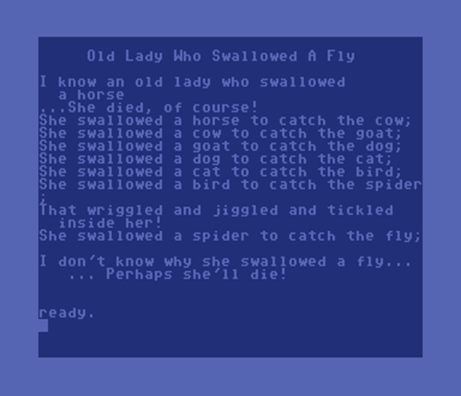
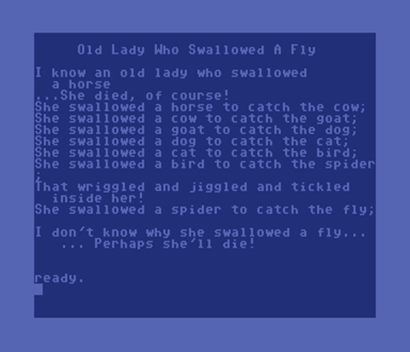

1 rem rosetta code
2 rem old lady who swallowed a fly - c64
5 print chr$(147);chr$(14)
10 dim a$(10),ex$(10),mu$(8,3):a=1
15 for i=1 to 8:read a$(i),ex$(i):next i
:gosub 2500
20 for c=1 to 8
30 print chr$(147):print " Old Lady
Who Swallowed A Fly ":print
40 print "I know an old lady who
swallowed"
45 print " a ";a$(c):m$=mu$(c,1)
:gosub 2000
50 for bc=c to 1 step -1
55 if bc=c or bc<=2 then print ex$(bc)
:m$=mu$(bc,2):gosub 2000
57 if bc=8 then for t=1 to 2000:next
60 if bc>1 then print "She swallowed a ";
a$(bc)" to catch the "a$(bc-1)";"
61 if bc>1 then m$=mu$(bc,3):gosub 2000
65 next bc
70 print " ... Perhaps she'll die!"
72 m$=mu$(1,3):gosub 2000
75 get k$:if k$="q" then end
77 if k$>"0" and k$<"9" then c=asc(k$)
-49
80 print:for t=1 to 1000:next t
90 next c
100 end
1000 rem lyrics
1010 data "fly","I don't know why she
swallowed a fly..."
1020 data "spider","That wriggled and
jiggled and tickled inside her!"
1030 data "bird","How absurd to swallow
a bird!"
1040 data "cat","Imagine that! She swallowed
a cat!"
1050 data "dog","What a hog, to swallow
a dog!"
1060 data "goat","She just opened her
throat and swallowed a goat!"
1070 data "cow","I don't know how she
swallowed a cow!"
1080 data "horse","...She died, of course!"
1100 rem music (optional)
1110 data "8cffaffcffa4f","8ggg4g8feec2c"
,"8c4d8e4f":rem fly
1120 data "8cffaffcffaff","8fgggggfeccc4c"
,"8cffaffc4f8a4f":rem spider
1130 data "8cffaffcffa4f","4g8g4g8feec2c"
,"8cffa4f8c4f8a8ff":rem bird
1140 data "8cffaffcffa4f","8c4g8g4g8feec2c"
,"8cffa4f8c4f8a4f":rem cat
1150 data "8cffaffcffa4f","4g8g4g8feec2c"
,"8cffa4f8c4f8a4f":rem dog
1160 data "8cffaffcffa4f","8ccggg4g8feec2c"
,"8cffa4f8c4f8a4f":rem goat
1170 data "8cffaffcffa4f","8ggg4g8feec2c"
,"8cffa4f8c4f8a4f":rem cow
1180 data "8cffaffcffa2f","4c2d4e2f"
,"8cffa4f8c4f8a4f":rem horse
2000 rem note player
2005 for z=1 to len(m$):el$=mid$(m$,z,1)
2010 if el$>="a" and a$<="g" then gosub 2050
2015 if el$>="1" and el$<="8" then du=
int(ms/(asc(el$)-48))
2020 next z:return
2050 rem play note
2055 n=asc(el$)-64
2060 poke 54272,nt(n,2):poke 54273,nt(n,1)
:poke 54276,17
2065 for i=1 to du:next i:poke 54276,16
2070 return
2500 rem set up sound table and sid
2505 dim nt(7,2):nt(3,1)=16:nt(3,2)=195
2506 nt(4,1)=18:nt(4,2)=209
2510 nt(5,1)=21:nt(5,2)=31
2515 nt(6,1)=22:nt(6,2)=96
2520 nt(7,1)=25:nt(7,2)=30
2525 nt(1,1)=28:nt(1,2)=49
2530 nt(2,1)=31:nt(2,2)=165
2535 poke 54296,15:poke 54277,9:poke 54278,0
2540 du=250:ms=1000
2550 for i=1 to 8:for j=1 to 3:read mu$(i,j)
:next j:next i
2599 return
 

This is the classic nursery song... Sung programatically! I had some fun with this one.
The version of BASIC (version 2) on the Commodore 64 is not as robust the BASIC versions on later Commodore computers like the Commodore 128. I decided to build a music interpreter similar to the one that came built in to Commodore BASIC version 7. With that in place, the program needs only very minimal tweaks to allow it to run on the Commodore +4 and the Commodore 128.